What is ACME Phoenix?
ACME is a decision analytics company that helps credit card companies detect fraud. Phoenix is their flagship platform : a SaaS console used by fraud investigators and their managers to review AI-flagged transactions and resolve them.
transaction
flags it
console
resolves it
Meet Adam Johnson
Adam is a fraud investigator. Every shift, he opens Phoenix to a queue of flagged cases : each one a real person, a real transaction, a real judgment call.
The Design Challenge
I owned the end-to-end investigator experience. Every screen Adam touches, from the moment he logs in to the moment he closes a case.
The brief had two layers to solve for:
Give Adam everything he needs to prioritize and work through his cases with speed and accuracy. The core challenge was information architecture: figuring out exactly what Adam needs to see, in what order, so every decision he makes is fast and confident.
Fraud investigation is repetitive, high-pressure work. Investigators burn out. They disengage. They leave. ACME needed a way to keep Adam motivated, growing, and invested in his own performance.
The five surfaces I designed
How I Designed It
Not just screens. A system. Before any interface decisions, I mapped out what Adam needs to do, what information supports those jobs, and how every surface connects.
I used Jobs-to-be-Done instead of user stories because Adam's core jobs don't change, even as the system around him does. Four target jobs emerged: resolve a case, flag a fraud pattern, flag an AI model, and manage his workload.
 JTBD 01: Resolve a Case
JTBD 01: Resolve a Case
 JTBD 02: Flag a Case
JTBD 02: Flag a Case
 JTBD 03: Flag an AI Model
JTBD 03: Flag an AI Model
 JTBD 04: Manage & Prioritize Workload
JTBD 04: Manage & Prioritize Workload
The Object-Action Matrix translated Adam's jobs into the grammar of the system: every object he interacts with, and every action he can take on it. This became the foundation for consistent labels, controls, and navigation across every surface.
Object-Action Matrix
| Object | Resolve | Flag | Escalate |
|---|---|---|---|
| Case | ✦ | ✦ | ✦ |
| Queue | ✦ | · | · |
| Model | ✦ | ✦ | · |
| Investigator | · | · | · |
Transactional Attributes
- Case ID
- Case Status New · Open · Active · Closed
- Case Disposition Fraud · Not Fraud · Unable to Confirm
- Fraud Type First Party · Third Party
- Case Level Service · Account · Customer
- Created Date/Time
- Last Updated Date/Time
- Queue ID / Queue Name
- Assigned Investigator
- Priority Level High · Medium · Low
- ↳ Transaction
- Transaction ID
- Amount · Date/Time · Merchant · Location
- ↳ Customer
- PAN · Account ID · Name · Address
- Phone · Email · Fraud History
- Transaction History · Chat History
- ↳ Model (case generator)
- Model ID/Name · Confidence Score
- Queue ID · Queue Name
- Queue Priority High · Medium · Low
- Case List IDs of cases in queue
- Assigned Team / Investigators List
- Model ID / Name
- Model Version Number
- Model Creation Date
- Model Last Update / Training Date
- Investigator ID · Name · Photo
- Role / Seniority Level
- Shift / Work Hours · Team ID
- Cases Assigned · Queues Assigned
- Current Rank / Level
- Current Points (This Quarter)
- Lifetime Points · Badges Earned
- Active Challenges · Completed Challenges
- Training Assigned · Training Completed
- Kudos Given · Kudos Received
Analytic Attributes

Not everything Adam does carries equal weight. The priority matrix separated high-frequency tasks from occasional ones, ensuring the dashboard surfaces what Adam needs most, not everything at once.
Priority Matrix
| Priority | Tasks |
|---|---|
| High |
|
| Medium |
|
| Low |
|
Before touching Axure, I sketched the key surfaces to work out information hierarchy and layout logic on paper first.
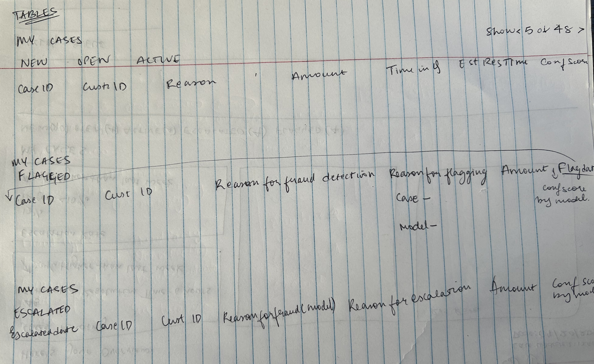
Sketch 01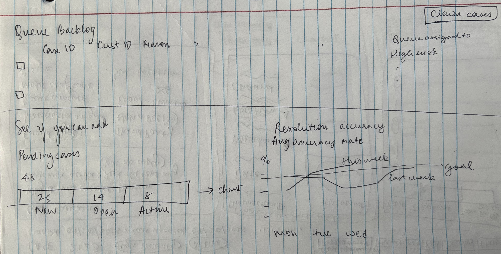
Sketch 02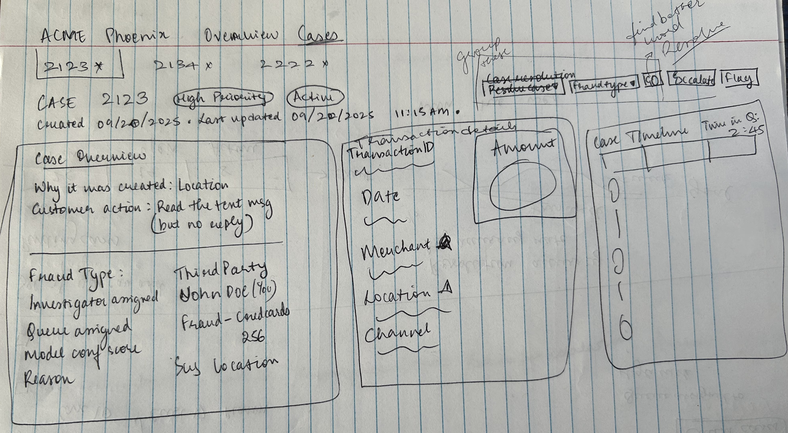
Sketch 03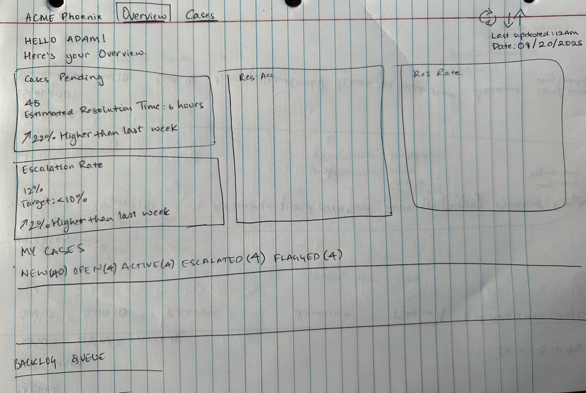
Sketch 04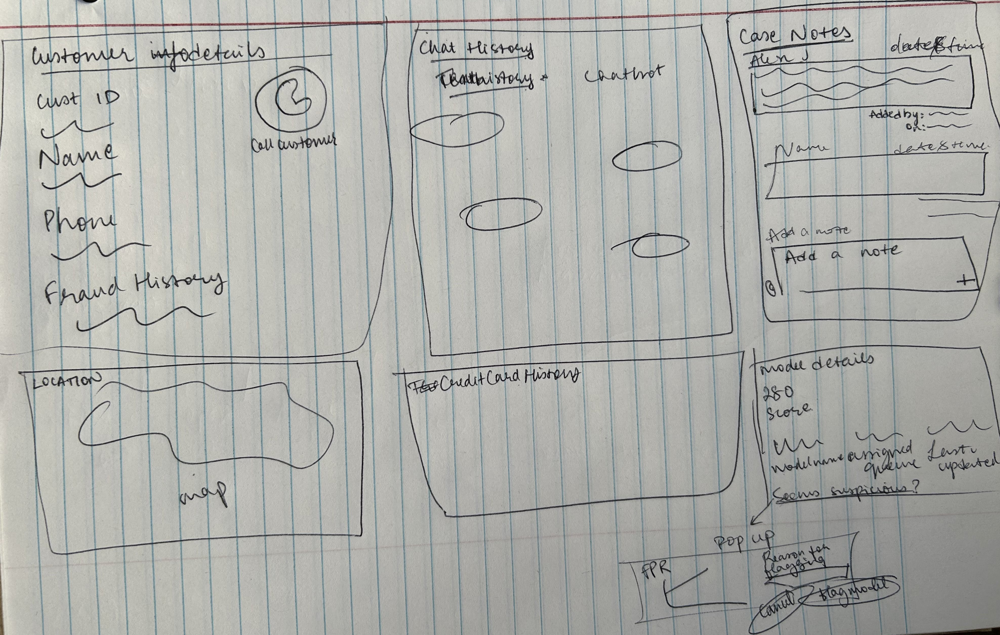
Sketch 05Every chart on the dashboard earned its place. The choice of chart type was always driven by the nature of the data: comparison vs. trend vs. progress.
| Metric | Chart Type | Why |
|---|---|---|
| Resolution Rate vs Queue Avg vs Dept Avg | Horizontal Bar | Comparing Adam's performance against two benchmarks; bars make comparison instant |
| Team Mission Progress | Progress Bar | Single metric tracking toward a goal; progress bars show completion most clearly |
| Case Timeline | Timeline / Stepper | Sequential events in order; shows causality and chronology better than any other format |
| Investigator Rank and Level Progress | Progress Bar | One metric, one goal; progress bar is the clearest choice |
| Merchant Fraud Count | Bar Chart | Comparing counts across merchants; bars not lines, because there is no trend, just comparison |
| False Positive Rate (AI Model) | Line Chart | Trend over time; line charts are correct for continuous change |
| Customer Spending Trend | Line Chart | Spending behavior over time; trend data needs a line |
| Leaderboard | Ranked List | Comparison across investigators; a ranked list with filter options (coins, accuracy, amount saved) lets Adam control what he's comparing |
Designing the System
Adam's day starts here.
Every shift, Adam logs into Phoenix and lands on his dashboard. This is his home base: a single screen designed to give him full situational awareness before he touches a single case. He can see his progress, his team's status, and his performance at a glance. No hunting, no clicking around. Everything he needs to orient himself is right here.
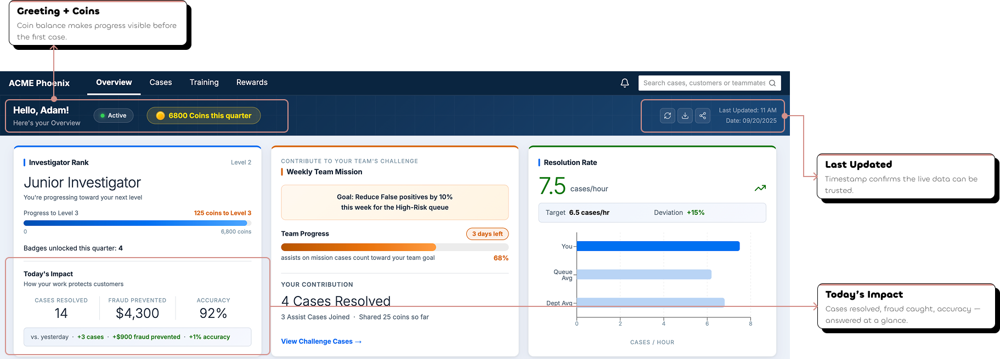
Before he works, he understands where he stands.
The three cards at the top of the dashboard weren't placed arbitrarily. They're designed around the three questions Adam asks himself at the start of every shift, in exactly this order.
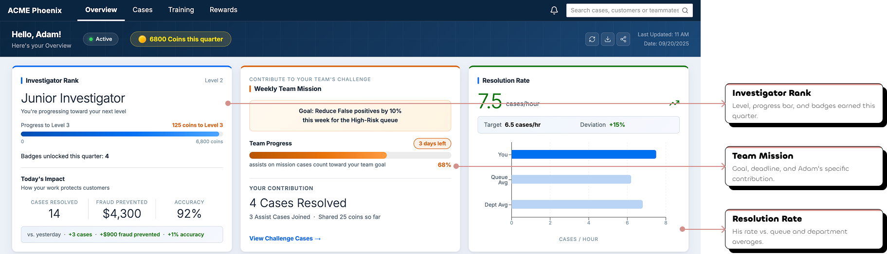
Now he knows where he stands. Time to pick his cases.
The My Cases table is where Adam spends most of his time on the dashboard. It's not just a list. It's a fully structured workspace designed around every state a case can be in.
Each tab represents a different case state. Open cases are the default because that's where Adam's attention should go first: cases waiting to be worked.
Every column in the table earned its place. Each one answers either "should I work this case next?" or "what do I need to know before I open it?"
The most complex tab in the table. Assists has three nested tabs of its own, because assist relationships have three states that matter differently to Adam.
When Adam's ready to claim new work, the Queue Backlog shows every available case in the system. One button, Claim Cases, and it's his.
Cases where teammates are asking for Adam's expertise on a flagged transaction.
Cases Adam has accepted and is actively working on behalf of a colleague.
Cases where Adam has sent out his own assist requests and is waiting on a response.
A case ID is all it takes.
From anywhere in the dashboard (his My Cases table, the Queue Backlog, even a search result), Adam clicks a case ID and lands on Case Details. No extra steps, no navigation hunting.
The Case Details page is the most important surface in the entire console. This is where Adam does the actual work of fraud investigation: reviewing all the evidence, understanding the full picture of a case, and making a final call. Everything on this page was designed around one goal: give Adam everything he needs to make a confident decision without ever leaving the screen.
The first thing Adam sees is the priority and status of the case (High Priority, Active) as visual badges. Not buried in a table column. Right at the top, impossible to miss.
The action controls are also at the top of the page. Adam doesn't need to scroll to take action. The decision point is visible the moment he lands on the page.
Created date, last updated, last modified by. Adam always knows the history of a case before he reads a single piece of evidence.
Everything Adam needs. Nothing he doesn't.
Scrolling through Case Details, Adam moves through a carefully ordered sequence of information, each section building on the last, guiding him toward a decision.
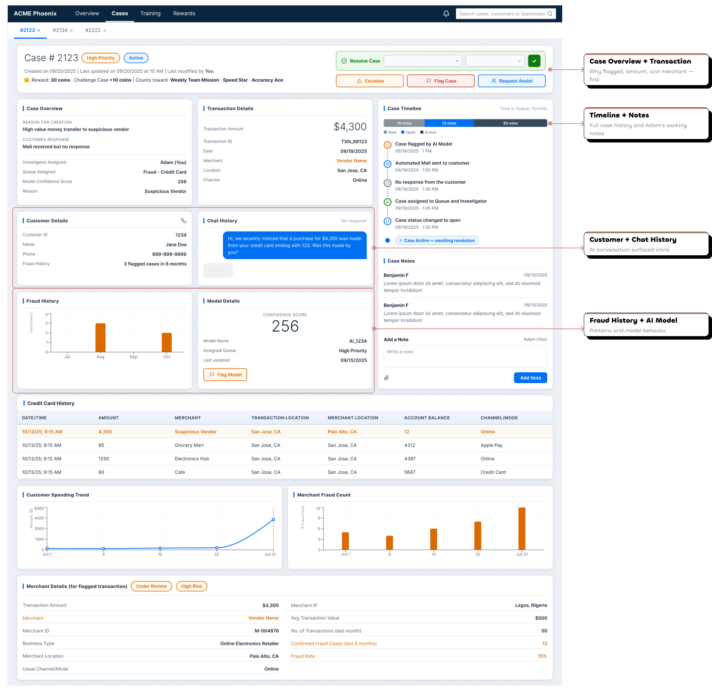
Adam's reviewed the evidence. Now he has to make a call.
Every case ends in one of four ways. Each path has its own flow, its own popup, its own outcome.
Assist
Adam selects a case disposition (Confirm Fraud, Not Fraud, Unable to Confirm Fraud, or Unable to Confirm Not Fraud) and if fraud is confirmed, specifies the fraud type. One click of the confirm button and the case is closed.
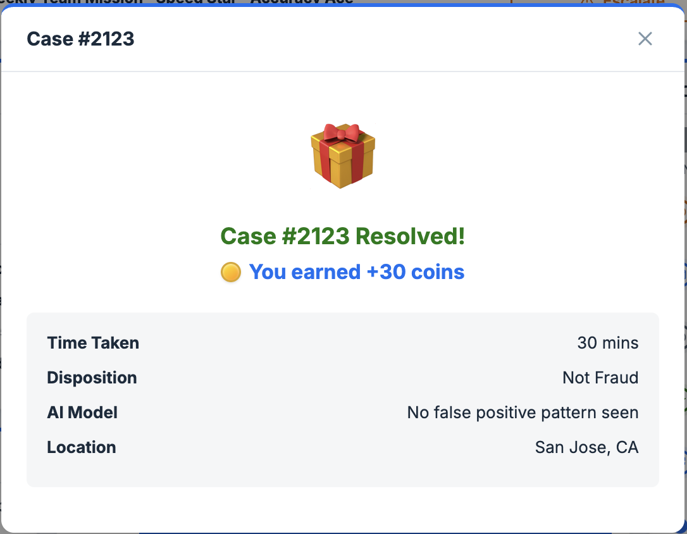
The confirmation popup does two things at once: confirms the case is closed and tells Adam exactly how many coins he just earned. The resolution is rewarding. Literally.
Adam decides the case needs to go higher. He hits Escalate, fills in the reason and any additional comments, and submits.
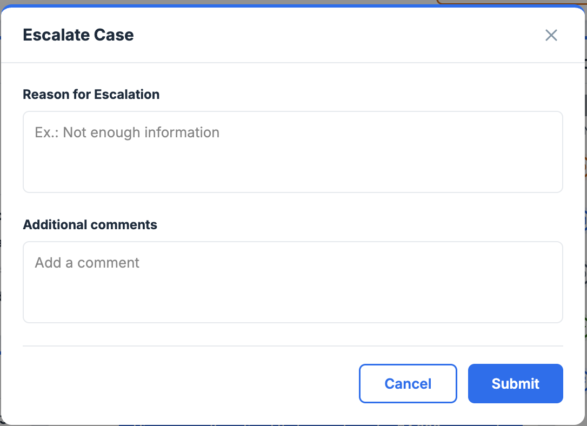
Escalation isn't just a button. It's a structured handoff. The reason field ensures the next person who touches this case has full context from Adam.
Adam spots something worth flagging: a pattern, a suspicious detail. He hits Flag Case, adds his reason and comments, and submits.
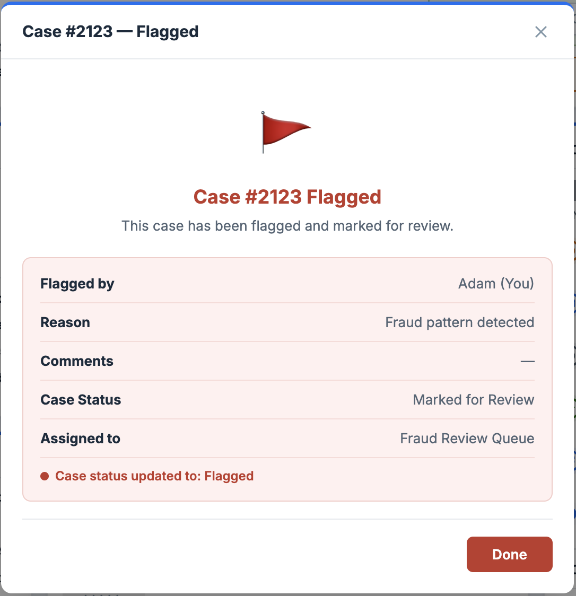
Flagging is Adam's way of saying "something is wrong here but I can't fully resolve it yet." The structured reason field makes sure that signal doesn't get lost.
Adam needs a second opinion. He opens the assist request, fills in the reason, selects who to send it to, decides how many coins to share as a reward, sets the urgency, and sends.
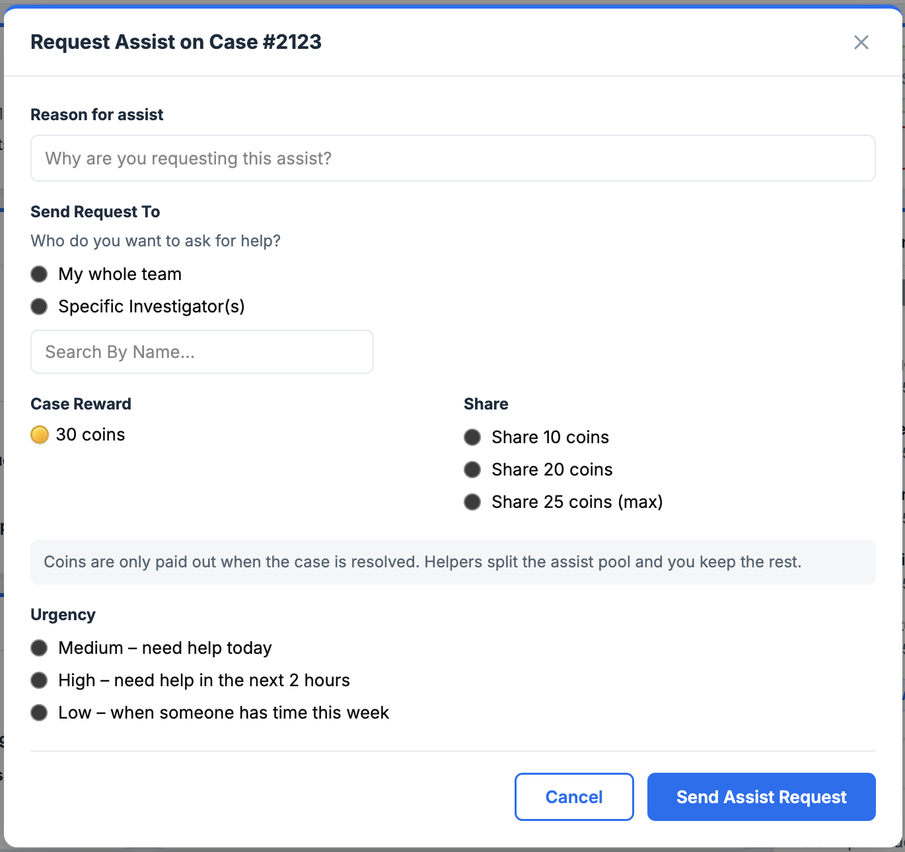
The coin share field is intentional: Adam has skin in the game when he asks for help. It keeps assist requests meaningful and not just a way to offload work.
Adam notices something the AI missed.
While working through his cases, Adam spots a pattern: too many false positives coming from the same model. He doesn't just resolve the case and move on. He flags the model.
Sometimes Adam isn't looking for a specific case. He's looking for a pattern.
The global search bar is persistent across every page. Adam types a name, a case ID, a customer, and the results come back organized across three categories instantly.
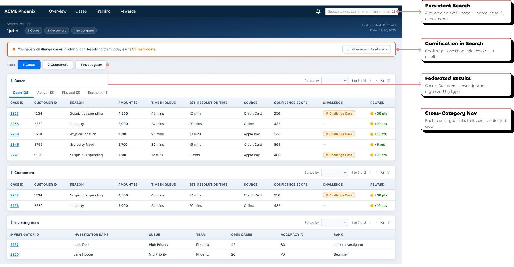
Adam's shift doesn't just end with closed cases.
The dashboard shortcuts aren't accidental: the Training Progress card links directly to Adam's Training Center, and the Rewards and Badges card links directly to the Rewards Hub. Progress is always one click away.
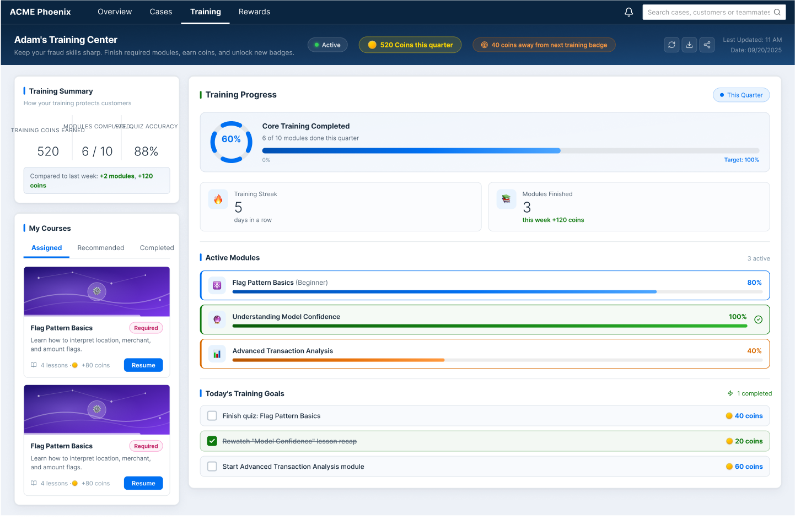
Adam can see his active modules, track his completion progress, and earn coins for finishing courses. Learning is part of the game.
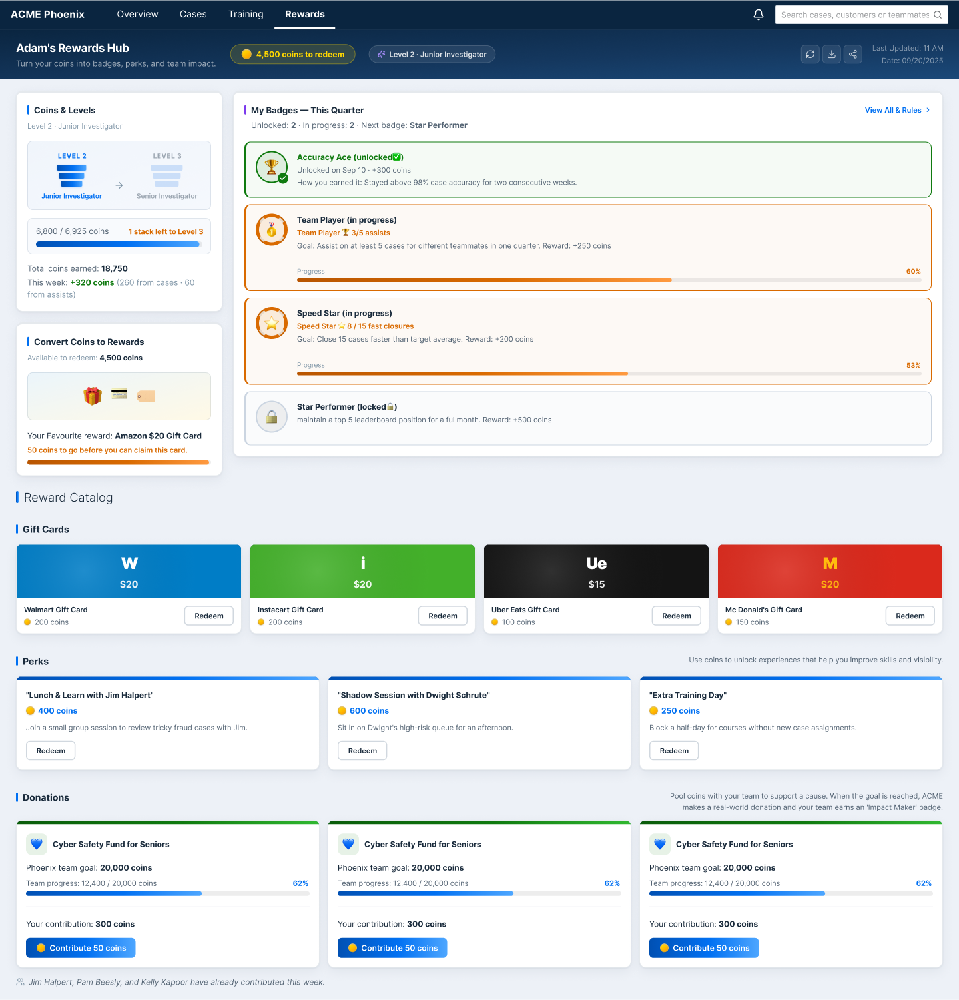
Coins convert into real-world perks: gift cards, lunch with a manager, donation goals. The reward catalog makes the coin economy tangible and worth working toward.
Making It Better
Good design doesn't end at the first version. After design reviews with the stakeholder and subject matter experts, several opportunities for improvement emerged.
What changed:
- Status tags redesigned as pills, not buttons. Clearer visual language.
- Merchant Fraud chart corrected from line to bar, because this is comparison data, not trend data
- Search results refined for true federated results across Cases, Customers, and Investigators
- Assist flow fully prototyped end to end
- Dashboard card hierarchy made consistent across all cards
Before / After: Status tags
A small change with a clear visual language shift, from button-shaped to pill-shaped. Buttons imply action. Pills communicate state.
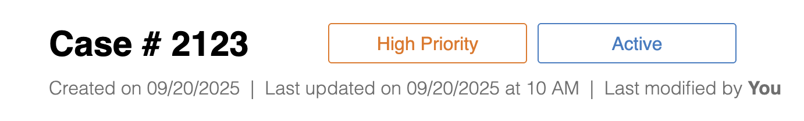
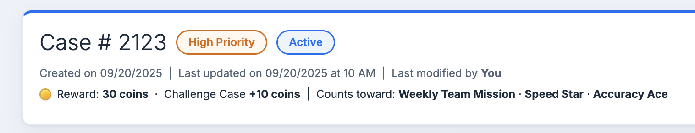
Before / After: Merchant Fraud chart
A line chart implies change over time. Merchant fraud count is comparison data: how many fraud cases per merchant. Switching to a bar chart makes the comparison instant and removes a false narrative of trend.
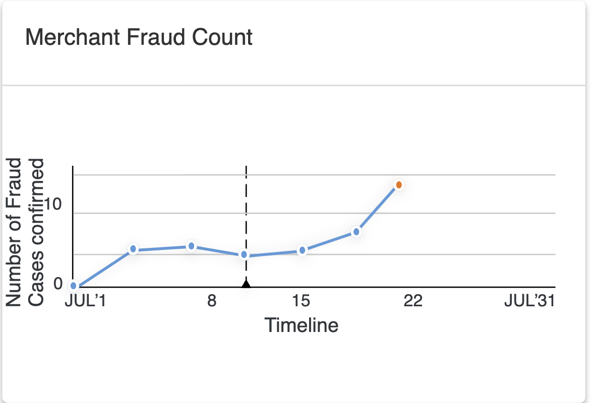
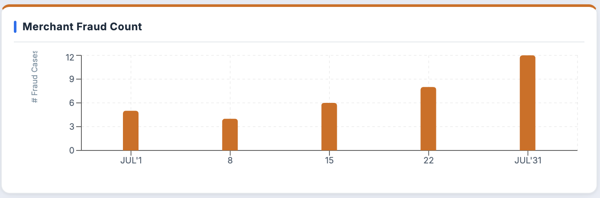
On tooling:
The designs were built following the SAP Fiori design system throughout: first prototyped in Axure, then migrated to Figma.
The migration wasn't just a tool switch. It was an opportunity to apply the design system more rigorously, refine visual consistency across every surface, and bring the designs to the production-ready quality they deserved.
Bridging Design and Engineering
I didn't just design screens. I documented them. Because I've been on the other side of a handoff. I know what it feels like to receive a design file with no context, no states, no edge cases, and be expected to build it.
So I made sure that didn't happen here.
The handoff documentation covers every surface, every component state, every dialog flow, and every data visualization decision, written so engineering could build without guessing.
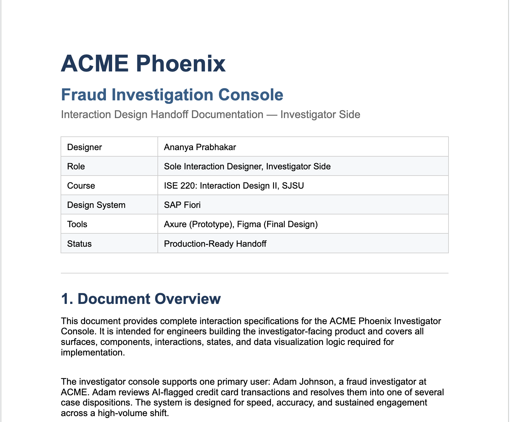
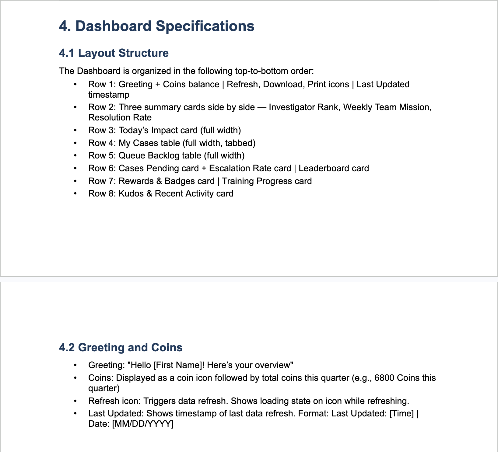
Outcomes & Reflections
ACME Phoenix is a production-ready fraud investigation console designed to help investigators like Adam work faster, make more confident decisions, and stay motivated through a demanding shift. The design achieves:
- A dashboard that answers Adam's three most important questions before he touches a single case
- A case details page where everything needed to make a call is on one screen, in the right order
- A full gamification layer that makes performance visible, rewarding, and worth competing for
- A global search experience that surfaces cases, customers, and investigators in one place
- A complete interaction system with consistent labels, actions, and patterns across every surface
What I'd do next:
Usability testing with real fraud investigators, because no amount of stakeholder review replaces watching an actual Adam use the system for the first time.
What this project taught me:
Empathy in UX isn't always easy. For most projects, I can put myself in the user's shoes because I've worn something close to them before. Adam was different. I've never sat in a call center with 40 cases waiting, a resolution timer ticking, and a team leaderboard watching.
That's the skill this project sharpened. Not just designing for users, but designing for lives you've never lived.